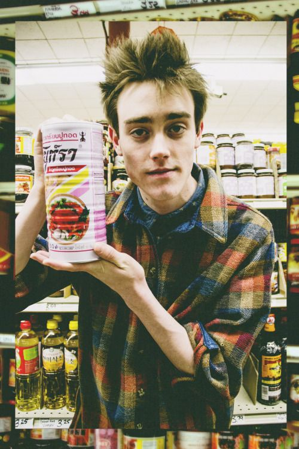
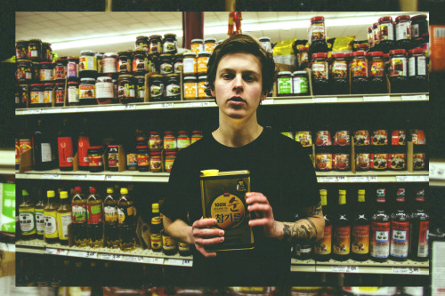
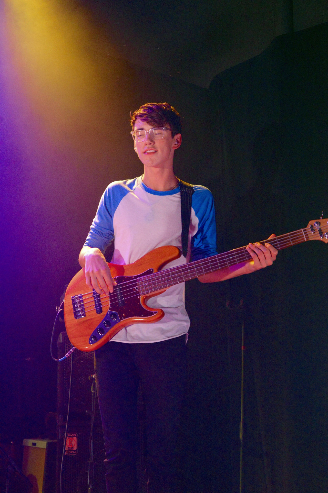

Members of band
Jake Luppen - Guitarist (Stitches)

ABOUT
Guitarist known for being one of the founding members of the band Hippo Campus, with whom he's released the EPs Bashful Creatures and South.
BEFORE FAME
The band was formed in 2013. He met his bandmates while they were at the Saint Paul Conservatory for Performing Artists; he'd previously been part of a band called Whistle Kid.
TRIVIA
At the end of 2015, the band was on CBS This Morning Saturday.
FAMILY LIFE
He grew up in Minnesota.
ASSOCIATED WITH
He's expressed interest in collaborating with Kanye West.
BIRTHPLACE AND AGE:
Minnesota , 21 years old
Nathan Stocker -Guitarist (Turntan)

Zach Sutton - Bassist (Espo)

Whistler Allen - Drummer (Beans)
Generally
BASED: St. Paul, Minnesota
AGES: 18-20 years old
THE NICKNAMES:
Nathan Stocker: Zach lived in Finland for a while as a kid and Espo is a city in Finland, so that's why we call him Espo.
Jake Luppen: Whistler looked like a '50s gangster, so I thought Beans was a good name for that.
Stocker: Turntan is short for Floyd Turntan, which is—I don't know; Jake gave himself that name. And then Stitches, it has nothing to do with physical injury. I have an imaginary cat friend, Morgan, and sort of entered the void and became this very sporadic character, sporadic cat owner, named Stitches.
YOUNG ONES:
Whistler Allen: I started playing drums before I could remember. My dad has footage of me playing when I was three.
Zach Sutton: I started playing bass because some of my family members were playing guitar. I bought a guitar and that didn't really work out, so I stepped down a level and picked up the bass.
Luppen: My family was very musical–my mom was a singer, my grandpa was a music teacher, and my grandma was a musician as well. It just kind of came through the bloodstream, I guess.
Stocker: I have the same story. My grandpa was a music teacher. I started playing music because I was drawn to it. You could say music started playing me.
INSPIRATION AND REDEMPTION:
Stocker: First and foremost, we draw a lot of influence from The Shawshank Redemption with Morgan Freeman. [laughs] A large amount of our material is what we're feeling at the time and how we apply it to daily life.
Luppen: We definitely get inspiration from seeing people have a good time at our shows. The more fun it is to listen to, the more we want to write it. That's a blueprint for our music.
GROWING UP:
Luppen: The older I get, the more things I have to say, and music is a great outlet for doing that. This whole process of recognizing what being an adult is has been a pretty common theme in our music.
Stocker: I feel like you never really grow up. We just get better at faking it. There's not a bar you pass and then you're this magnificent thing. There's no revelatory moment, really. It's a culmination of events. It's life.
ON NOT GOING TO COLLEGE:
Stocker: In American society, college is a business. It's a blood-sucking leech of money. I spent 13 years in school and that's a long time to be doing something, so what's wrong with taking a break?
Allen: In the past year and a half of doing this, I've learned–and it's the most cliché thing in the world–but if you have one true love in your life that you've wanted to pursue, then you gotta go for it. So no, I'm not in college.
Luppen: I went to college this year with Zach at the University of Minnesota and we discovered it's not for us. It's really taught me a lot of what I don't necessarily want to be–I don't want to manufacture myself and be a person that college creates, like with a suit and tie job, working in a cubicle. Our high school made us different than that.
DREAM BIG:
Sutton: If we had a van that'd be tight.
Luppen: If anyone wants to give us a van, that's our dream!
Sutton: But touring nationally and internationally is a dream of mine and I think I share that with them.
Luppen: And a dream collaboration would be with Ellery James Roberts from Wu Lyf.
NINTENDO 64 SUPERSEDES:
Luppen: If any other band wants to play us in Super Smash Bros N64, we are the best. Stitches is Fox, Espe is Ness, Turntan is Kirby, and Beans is Pikachu. We take it more seriously than we take our music.
FOR MORE INFORMATION ON HIPPO CAMPUS, VISIT THEIR WEBSITE OR SOUNDCLOUD.